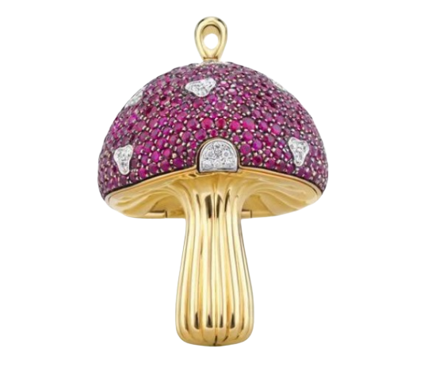
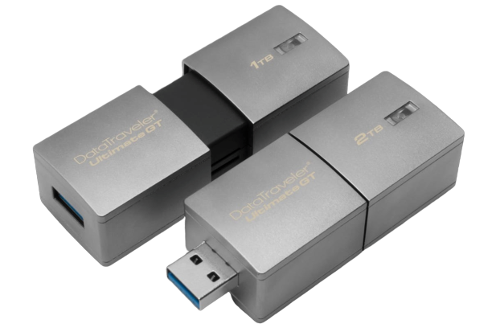
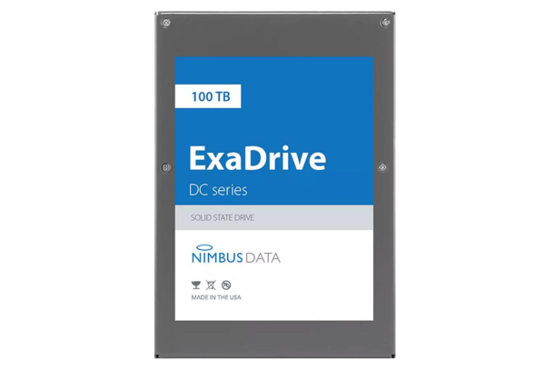

Интересные факты о Flash-накопителях
- Современные флеш карты памяти выдерживают температуру от -30 С до +80 С при хранении.
- Если флэшку хранить в холодильнике, то срок хранения информации будет более длительным.
- При использовании в нормальных температурных условиях, гарантированный срок службы флэшки составит 10 лет .
- При температуре 100 С флэшка полностью выходит из строя всего за 10 часов.
- 1 Гб гибкого диска обходится производителю в $1, а на производство 1Гб флэш памяти уходит $0.7.
- Большинство юсб флешек весят менее 30 граммов, что делает их портативными и легкими в перемещении.
- Flash накопители невосприимчивы к электромагнитным помехам.
Самая дорогая USB-флэшка
 Недавно швейцарская ювелирная мастерская Shawish удивила мир выпуском самой дорогой USB флешки стоимостью $36,9 тыс. (1,1 млн руб) при скромной емкости 32 Гигабайта. Накопитель выпускается под названием Magic Mushroom и выполнено в форме гриба. Для подключения флешки к компьютеру необходимо нажать на фиксатор и открыть шапку гриба, под которой находится разъем USB. При создании этого шедевра дизайнеры сочетали образы из детства с современными технологиями, черпая вдохновение из книги "Алиса в стране чудес" (Льюис Кэрролл).
 Корпус флешки выполнен из белого золота инкрустированного бриллиантами и изумрудами. Кому такая флешка не по карману, производитель предлагает еще два варианта: желтое золото и рубины вместо алмазов за $24,4 тыс. ; розовое золото и розовые сапфиры за $16,5 тыс.
Корпус флешки выполнен из белого золота инкрустированного бриллиантами и изумрудами. Кому такая флешка не по карману, производитель предлагает еще два варианта: желтое золото и рубины вместо алмазов за $24,4 тыс. ; розовое золото и розовые сапфиры за $16,5 тыс.
Самая вместительная USB-флэшка
 Недавно Kingston выпустила очередную новинку — DataTraveler Ultimate GT с 2 ТБ пространства в относительно компактном корпусе, основной изюминкой флешки является поддержка стандарта USB 3.1 Gen 1. Это позволяет получить возможность хранения большого объем данных и передачи на очень высоких скоростях (чтения/записи) — 300 Мбит/с и 200 Мбит/с соответственно.
Совместимость с ОС: Windows 10, 8.1, 8, 7 (SP1), Mac OS версии 10.9.x и выше, Linux версии 2.6.x и выше, Chrome OS. Единственным реальным недостатком этого USB-накопителя является цена: 1500 $ (85 000 р.).
Самый вместительный SSD-диск
Новая «линейка ExaDrive DC поднимает планку энергоэффективности SSD, плотности и надёжности записи», заявляет производитель, представляя модель ExaDrive DC100.
 Несмотря на свою огромную ёмкость, новый накопитель ExaDrive DC100 обещает быть самым энергоэффективным твёрдотельным накопителем в мире. Он будет потреблять на 85% меньше энергии, чем его конкуренты. Производитель поясняет, что это на 42% снижает стоимость хранения информации для потребителя – с точки зрения энергопотребления.
Накопитель позволяет сохранить «20 миллионов песен, 20 тысяч фильмов в HD, или данные с 2 тысяч айфонов – в изделии, которое настолько мало, что поместится в вашем заднем кармане», сообщает Nimbus. С точки зрения фотографов, накопитель ExaDrive DC100 вмещает порядка 2 миллионов RAW-файлов размером в 50 МБ каждый.
Как и другие накопители сверхвысокой ёмкости, ExaDrive DC100 рассчитан по большей части на использование в дата-центрах, однако Nimbus считает и «цифровое изображение» одной из основных областей применения накопителя.
Использованные ресурсы: